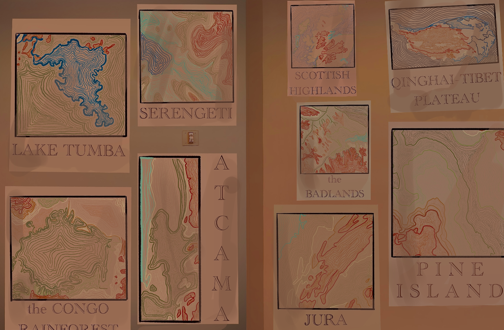

Material systems & coded ecologies
Click on the image to view a larger version.
Made with Procreate, the piece cartographer’s study is an immersive experience. The view feels like they have walked into the space of an experienced cartographer. Firstly, I researched the nine biomes in the world and noted their most prominent examples. Next, I would procure topography maps for each place and trace them with colors corresponding to their elevation. After finishing these maps individually, I traced the borders and labeled each photograph using the Academy Engraved LET font in Procreate. Next, I aged these images with filters and shading. Then, I overlaid the graphics on a wall that I had taken a picture of as the base of the final piece. Lastly, I used the airbrush pen to shade and create a warm and familiar ambiance.
← Back to all projects